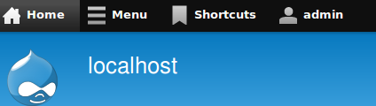
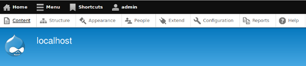

Blog
DrupalCon is the biggest conference held in the Drupal community. Since 2005, it has run in ten countries across the world, growing from under 50 people at the first DrupalCon in Antwerp all the way up to 2012’s conventions, pulling in over 3000 people in Denver alone.
In 2013, for the first time, DrupalCon is being held in the southern hemisphere, in CrossFunctional’s hometown of Sydney, Australia.
Apart from being the platinum sponsor, CrossFunctional has developed a mobile application that runs on iOS and Android for DrupalCon Sydney. In this post, we’d like to discuss its functionality, the methods we used to create it, and the challenges that we faced developing this
hybrid app.
To download the apps and try them out, grab them from the iTunes Store and Google Play store using the links below.
In my previous blog post The Latest in Mobile for Drupal 8 - Oct 2012, I briefly touched on how the responsive toolbar was going to look in Drupal 8.
It was only a prototype then, but last night I installed the Drupal 8 was quite taken back how slick and responsive the new admin toolbar is.
Here are some screenshots on how it will look.
Full size

Full size - toolbar expanded

This does not dipsplay in screenshots, but on far right on the expanded bar there is a toogle icon
When expanded, this will move your admin bar to the left as displayed below.
...
Cross(Functional) is proud to be a platinum sponsor for DrupalCon Sydney Feb 6-9 2013. DrupalCon Sydney is the first DrupalCon to held outside the U.S and Europe. The conference will be held in in Crown Plaza, Coogee and the general conference tickets have already sold out (450) two months prior to its commence.
Here a breakdown of the conference's program:
Wed 6 Feb
- Training - three training sessions are available.
- Business Day - aimed at business leaders and managers who are exploring incorporating Drupal into their technology suite.
Thurs 7 Feb - Fri 8 Feb
During these two days the conference will consists of keynotes, sessions and BOF The keynotes speakers will be Dries Buytaert, Drupal’s founder and project lead and Senator Kate Lundy, Minister Assisting for Innovation...
The release of Drupal 8 is less than one year away; expected to drop around September, 2013. For some that may still seem like a long time away, but given the number of changes and new features that are planned to be packed into Drupal 8, 11 months does not seem that far off.
For those who have not been following the changes that are planned for Drupal 8, check out the Drupal 8 initiatives to get a taste of some of the work that's going into Drupal 8.
These changes have motivated me to start contributing to Drupal 8, especially as feature freeze is one month away and code freeze is five months. Some one of the ways I want to do this is by covering some of the developments that are happening in Drupal 8, particularity in the area of front end development. I will aim to write a post once a month.
One of the Drupal 8 initiatives that I am in particularity interested in is the...
This month, the Digital Futures 2012 Report on the Internet in Australia was issued by the ARC Centre of Excellence for Creative Industries and Innovation. Based on a survey taken in 2011, it follows trends in Internet usage across the country, and attempts to point out major opportunities and potential issues presented as more Australians get online.
Cross(Functional) had a look through the report, and here's some of what we found:
General usage
- 86.8% of Australians said they use the Internet, which is up by 6% compared to last year.
- 96.3% of Australian households have broadband access.
- An increasing number of households use VOIP services, whether it is provided by their ISP, or by services like Skype.
- The number of households accessing the Internet via a mobile phone or mobile device has increased from 15% to 37% over the past two years.
- 9 out of 10 Australians describe the internet as being either '...